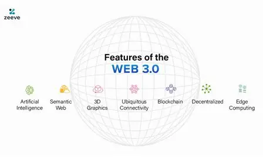

Web 3.0 is the third generation of the internet that focuses on decentralization, user data ownership, and smarter systems. Unlike Web 2.0 platforms such as Facebook, where companies control user data, Web 3.0 allows individuals to have greater control over their digital identity and assets. It is built on technologies like Blockchain and supports digital currencies such as Bitcoin. Overall, Web 3.0 aims to create a more secure, transparent, and user-centered internet.

Web 3.0 introduced a number of important new concepts to the web:
The term Semantic Web was coined by Tim Berners-Lee, the same person who created the World Wide Web. The idea behind the Semantic Web is that data on the web should be structured in a way that computers can process it meaningfully. Rather than just displaying text for humans to read, Web 3.0 pages are designed so that machines can also read, understand and act on the information they contain.
While Web 2.0 made the web participatory by allowing users to create and share content, Web 3.0 makes the web intelligent by allowing machines to understand that content. Web 2.0 was about people connecting with each other through the web. Web 3.0 is about the web itself becoming smart enough to connect information and deliver it in a more meaningful and personalised way.